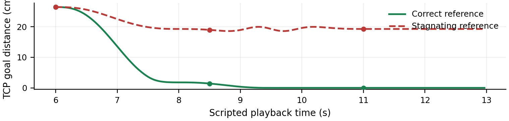
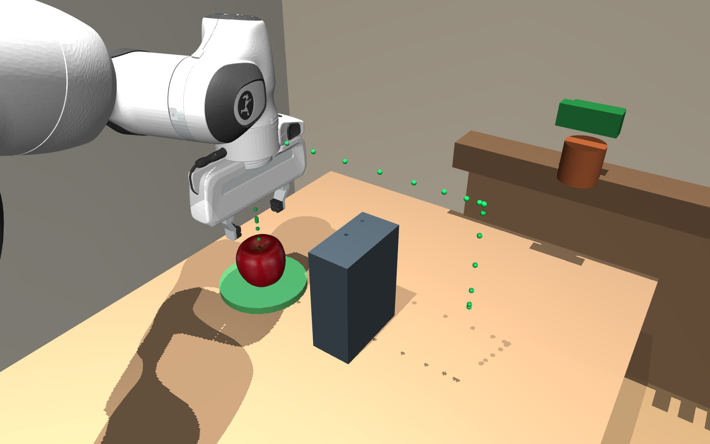

Make the symptom explicit.
Record the relevant time window, feature values and detection rule in a structured report.
Feedback-Enhanced Constraint Repair
for ReKep Motion Planning
When the motion is wrong, revisit the constraints.
Haerbin Institute of Technology
Explore the specification gap
Scene A · Object binding
Correct specification Subgoal
Bind the grasp reference to the task-intended apple.
Incorrect specification Subgoal
Bind the reference to a distractor while the task still asks for the apple.
Replace the object reference. Preserve the grasp stage, gripper pose and closure requirements.
Both motions close the gripper at the authored grasp position. This case illustrates object selection; it does not include transport or release.
These videos use fixed joint keyframes and scripted object attachment. The equations are manually authored specification examples; the videos are not outputs of ReKep planning or ReFlex automatic repair.
The central question
Constraint solvability does not guarantee task correctness.
ReKep-style systems translate language and visual observations into stage-level constraints, then ask a motion planner to solve them. A smooth, reachable trajectory can still approach the wrong object, interact with the wrong region, or omit a necessary safety condition.
ReFlex introduces feedback between planning and execution. It connects observable trajectory symptoms to possible specification defects, organizes the evidence into a structured report, and guides a conservative revision of the current stage.
The ReFlex feedback loop
ReKep generates and solves constraints. ReFlex checks the candidate and returns feedback to the constraint generator.
Record the relevant time window, feature values and detection rule in a structured report.
Use symptoms and task context to identify candidate defects in subgoal or path constraints.
Revise the failed stage while protecting valid object references, poses and unrelated stages.
Five representative symptoms
Look beyond a single frame
The two Scene A references share the same grasp and lift. During transport, one reaches the placement reference; the other oscillates locally and stops short.
The distance is computed from the authored TCP samples. Holds after arrival are normal; waits and necessary detours must be interpreted within the stage context.


Complete the operation
The correct Scene D reference lifts the apple above the barrier, lowers it onto the plate, opens the gripper and retreats. Safety applies to the robot and the carried object throughout transport.
The incorrect playback stops before contact. Its dashed continuation shows the unplayed hazardous candidate route.
Read & reproduce
The project page is in English. The current manuscript is a Chinese draft; quantitative evaluation is still in preparation.
Framework, five paired cases, and stage-level constraint equations.
Current draft · Chinese PDF02 / SpecificationsConstraint notesEnglish notation and correct / incorrect subgoal and path bundles.
Manually authored examples · Markdown03 / ProvenanceMedia manifestSource videos, hashes, poster timestamps and demonstration status.
Scripted qualitative illustrations · JSON@misc{reflex,
title = {ReFlex: Feedback-Enhanced Constraint Repair for ReKep Motion Planning},
author = {Wang, Shaoyi},
note = {Research manuscript in preparation}
}